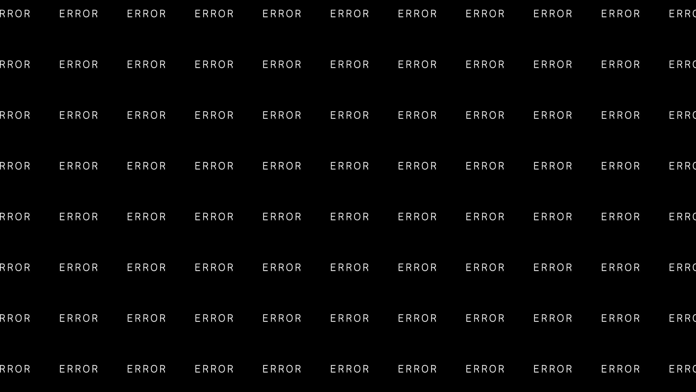
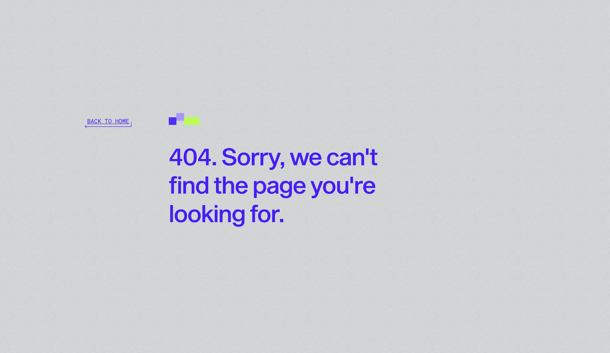

May 27, 2026
When a page goes missing
 5 min read
5 min read
A 404 page appears when someone reaches a URL that does not exist. The page may have been deleted, moved, mistyped, or linked from an old campaign. The technical meaning is simple. The visitor experience is not.
To a person, a 404 can feel like the website stopped paying attention. They clicked with intent. They expected the next step. Instead, the path broke. That small moment can decide whether they keep browsing or leave.
A 404 is still part of the experience
A broken route does not need to feel broken. The best 404 pages are calm, clear, and useful. They explain what happened without blaming the visitor, then give them a clean way forward.
That is the difference between a dead end and a recovery moment. A dead end says, “There is nothing here.” A recovery moment says, “This path is missing, but you are still in the right place.”
Search engines need clarity too
A missing page should return the right status. If a page is truly gone, the server should return a real 404. If it was permanently removed, a 410 may be more accurate. If the content moved, the redirect should lead to the closest relevant page, not the homepage by default.
The goal is not to hide every missing route. The goal is to make the website honest and easy to understand. Search engines can handle a normal 404. What creates confusion is a page that looks missing but returns a successful status, or a redirect that sends every broken path to the same place.
What a strong 404 should do
A strong 404 page starts with one simple message: the page could not be found. Then it gives the visitor a small set of useful choices. Home. Search. Product pages. Popular routes. Support. Nothing crowded. Nothing dramatic.
The page should load quickly, work cleanly on mobile, and match the rest of the site. It should feel like the product is still in control. When the design is quiet and the next step is obvious, the visitor has a reason to stay.
What CavBot watches
CavBot treats a 404 as a signal. It can show which routes are missing, where visitors came from, and whether they recovered or left. That turns a frustrating page into something useful.
One broken link may not matter. A pattern of broken links does. If the same missing route appears from a campaign, footer, old product page, or external referrer, you should know. The faster the issue becomes visible, the faster the path can be repaired.
Four 404 surfaces
The examples below show the difference between a page that ends the session and a page that helps the visitor continue.



A 404 will always mean something is missing. It should never mean the visitor is lost.